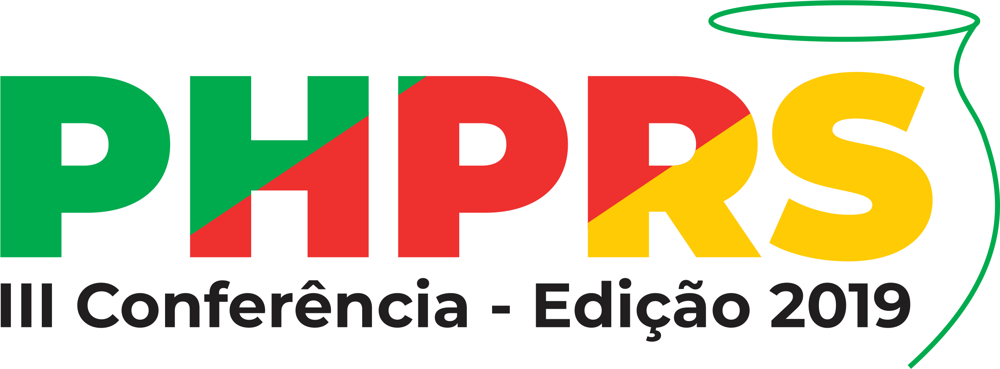

Your browser doesn't support the features required by impress.js, so you are presented with a simplified version of this presentation.
For the best experience please use the latest Chrome, Safari or Firefox browser.

Architecture Over Frameworks
Leonardo Tumadjian
@tumadjian
github: leoqbc
Sobre mim
- Desenvolvedor PHP a 10 anos
- CTO @ Multiverse Marketing
- Professor na Impacta e Senac São Paulo
- Pós graduado em Engenharia Web
- Viciado em séries
# Momento JABA

-----
# Participe e colabore com sua comunidade mais próxima


-----
# "Preguntas"
### ???
-----
# Programação Prognostica

-----
# Arquitetura?
> "A arquitetura trata-se principalmente da organização do espaço e de seus elementos"
- Wikipédia
-----
# Criando o avião
[Video de avião](https://www.youtube.com/watch?v=dfgOUol4F4k)
-----
# Frameworks, como funcionam por trás dos panos

-----
# Flow

-----
# O que um framework deve fazer de verdade?
* Ajudar na limpeza dos dados (segurança)
* Facilitar a comunicação com DBs
* Prover uma configuração padronizada
* Evitar CSRF (segurança)
* Cuidar do roteamento de URLs
* Implementar um DIC(contêiner)
-----
# Arquitetura, não ferramentas

> "Você não quer se casar com o Framework"
- Bob, Uncle
-----
# Vejamos
* Depender de abstrações(interfaces)
* Composition over inheritance
* Princípios de SOLID
* Banco de dados é só um detalhe
* O Framework também! :D
-----
# Tipos de arquiteturas mais comuns
* Hexagonal - **Alistair Cockburn**
* Domain Driven Design - **Erik Evans**
* Clean Architecture - **Robert C. Martin**
-----
# Por que ainda MVC?

-----
# WTF Laravel??
namespace App\Http\Controllers;
use App\User;
use App\Http\Controllers\Controller;
class UserController extends Controller
{
public function show($id)
{
return view('user.profile', [ // who the hell is view?
'user' => User::findOrFail($id) // extends model
]);
}
}
-----
namespace App\Http\Controllers;
use App\EntityManager;
use App\Entities\User;
use App\Output\Presenter;
class UserController
{
public function __construct(EntityManager $entityManager, Presenter $presenter)
{
$this->entityManager = $entityManager;
$this->presenter = $presenter;
}
public function show($id)
{
return $this->presenter->display('user.profile', [
'user' => $this->entintyManager->find(User::class, $id);
]);
}
}
-----
# Foco no business
1. Teste unitário nas Entities/Domínios
2. Entities somente com regras de negócios
3. Quem cuida da **hidratação** é o EntityManager(ORM)
4. Abstração em INPUT e OUTPUT
5. Camada de banco fica para os Repositories(DDD);
6. Serviços guiados a interfaces
7. A inicialização do framework pode ser abstraída*
*não é garantido abstração total do framework pois existem configurações/fregmentos além da inicialização
-----
# A Web como I/O

-----
## Design alternável
interface InputType
{
public function setData(array $inputData) : bool;
public function getFormatedInput();
}
interface OutputType
{
public function setData(array $outputData) : bool;
public function getFormatedOutput();
}
interface Presenter
{
public function display(string $mode, array $variables, OutputType $output);
}
-----
## Persistência e inicialização do framework abstratos
interface Persistance
{
// ...
}
interface FrameworkInit
{
// ...
}
-----
# Sucesso!!!

-----
# Clean Architecture

-----
# Outra sugestão

-----
# Livros que recomendo
- Patterns of Enterprise Application Architecture - **Martin Fowler**
- Clean Code - **Robert C. Martin**
- Clean Architecture - **Robert C. Martin**
- Refactoring - **Martin Fowler**
- Domain Driven Design - **Eric Evans**
## Um mundo sombrio


# Obrigado!

## Dúvidas??
## slides em breve no github